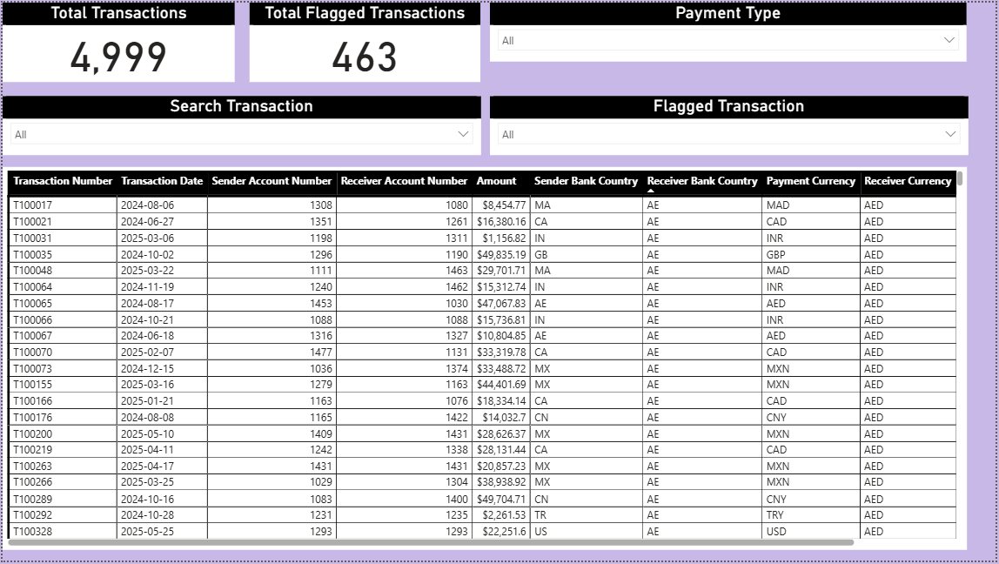
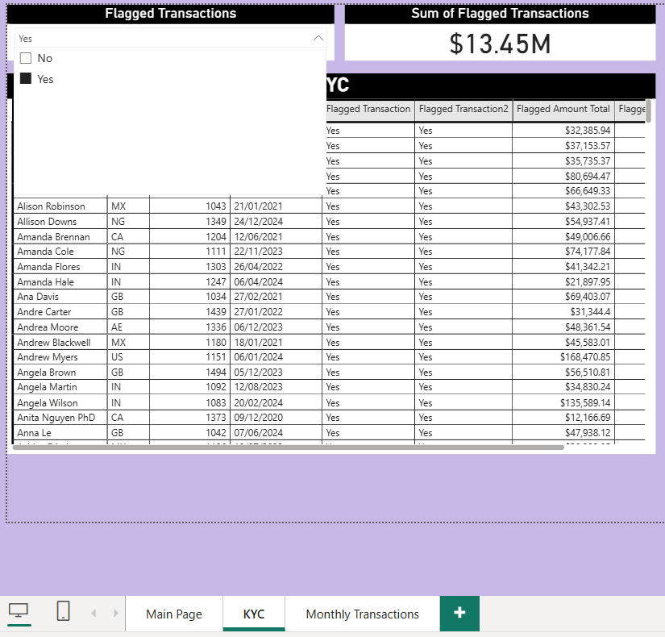
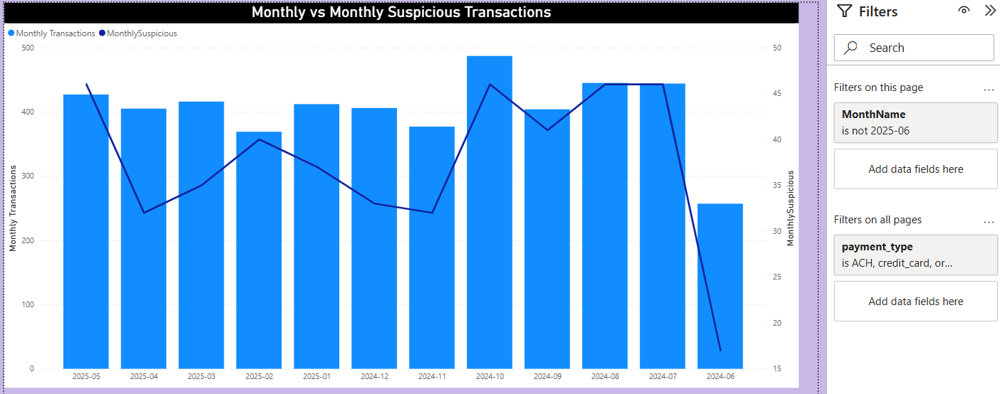

AML / Transaction Monitoring Dashboard
Power BI · Transaction Monitoring · AML Controls · KYC Review · Suspicious Activity Analysis
This project showcases an anti-money laundering and transaction monitoring dashboard built in Power BI.
It focuses on suspicious transaction detection, flagged transaction review, KYC monitoring, and monthly trend analysis.
The report is designed to help compliance teams quickly identify high-risk activity and investigate flagged behavior across customers, accounts, and payment types.
Project Overview
The dashboard brings together transaction-level monitoring and customer due diligence views into a single reporting experience.
It highlights total transactions, flagged transactions, suspicious transaction trends over time, and KYC-related flagged amounts.
Slicers allow users to filter by payment type, transaction flag status, and transaction number to support investigation workflows.
Main Report
What this page shows:
- Total number of transactions
- Total flagged transactions
- Filters for payment type and specific transaction lookup
- Detailed transaction table for investigation and drill-through

Main transaction monitoring page with KPI cards, slicers, and detailed transaction records.
KYC Monitoring Page
What this page shows:
- Flagged customer records tied to KYC review
- Total flagged transaction value
- Customer-level view for escalated or suspicious accounts
- Filtering by flagged transaction status

KYC investigation page focused on flagged customers and total flagged transaction value.
Monthly Suspicious Transaction Trend
What this page shows:
- Monthly transaction volume versus suspicious transaction count
- Trend comparison between overall activity and flagged behavior
- Time-based pattern analysis to help identify spikes in suspicious activity

Trend chart comparing monthly transactions against monthly suspicious transactions.
Key Business Questions
1. How many transactions were processed, and how many were flagged?
Executive KPI cards provide a quick compliance summary for monitoring transaction risk.
2. Which payment types show higher suspicious activity?
Payment type slicers allow investigators to isolate transaction channels and compare risk patterns.
3. Which customers or accounts require enhanced review?
The KYC page supports identification of customers associated with flagged transactions and high-risk amounts.
4. Are suspicious transactions increasing or decreasing over time?
The monthly trend page makes it easier to detect spikes, emerging patterns, and seasonal changes in suspicious activity.
Tools Used
- Power BI for dashboard development and interactive reporting
- DAX for measures and KPI calculations
- Data modeling for transaction, customer, and KYC analysis
- Compliance reporting concepts for AML and suspicious activity monitoring